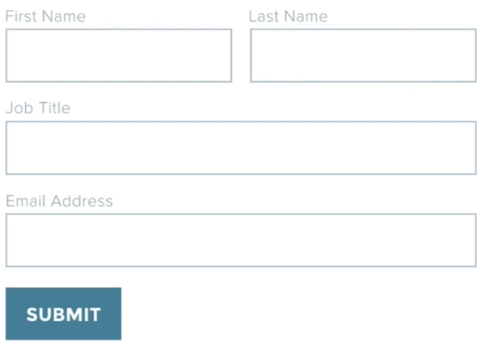
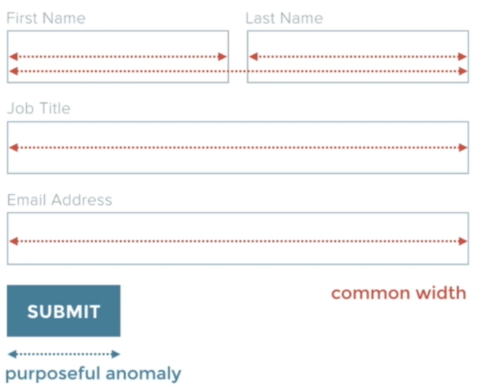
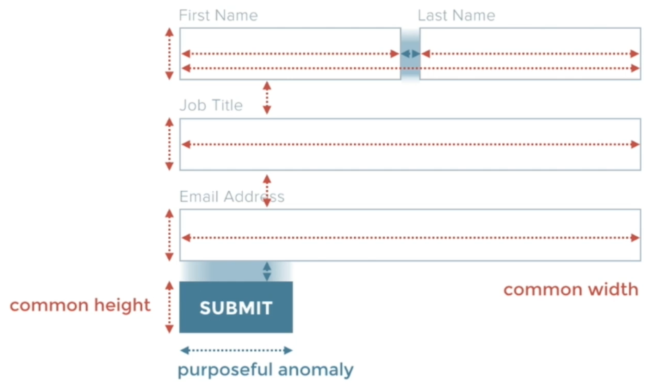
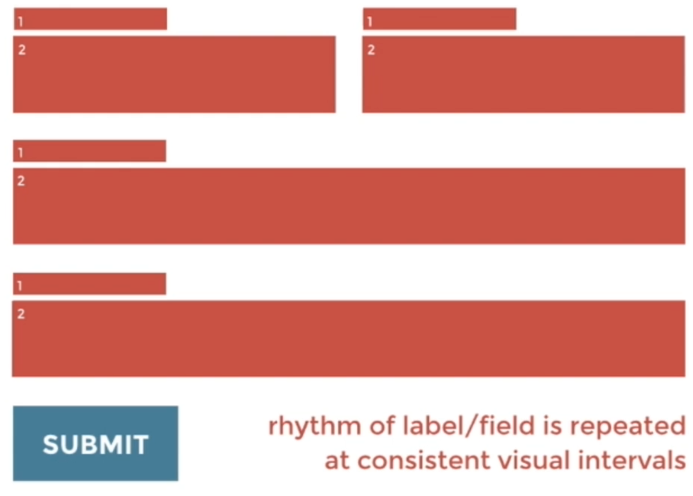
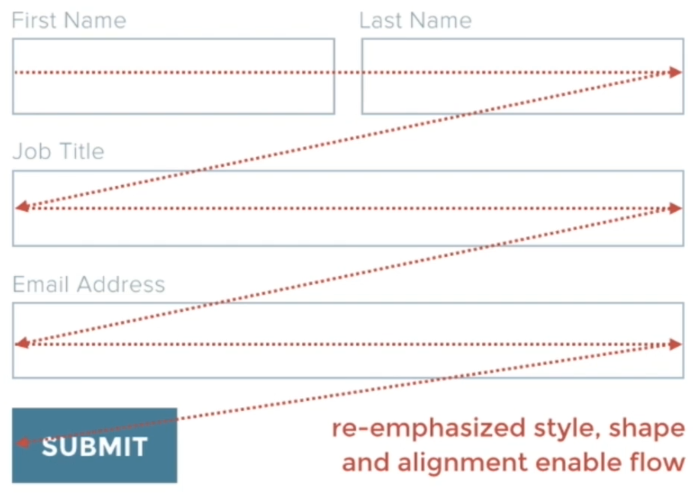

Jump to a section
14 · Case Study - Using Harmony for Better Form Design
Refined 15 October 2026 from the supplied Joe Natoli course notes. Original wording and captures remain preserved.
Core principle
Repeated field dimensions and spacing establish a pattern; a deliberate difference can distinguish the action.
Application to game tools
Use form layouts and recognizable buttons rather than hand-positioned labels and decorative action text.
Assessment and qualification
A shorter button is not inherently more usable. Full-width buttons can be appropriate in narrow tools and are explicitly used in the GOLF+ playbook.
Try it
Is the action distinct while remaining consistent with the host application?
Source: 14 Case Study - Using Harmony for Better Form Design.md
Study detail and teaching translation
Repeated field treatment helps the user recognize a form as a sequence of related decisions. Consistent labels, widths and gaps reduce unnecessary variation.
The action should be recognizable as a control and distinct from descriptive headings. A purposeful change in treatment can mark the transition from entering information to acting.
Teaching adaptation: use Qt form layouts and explicit button labels. The course example’s narrower button is one solution; a full-width primary action can also be appropriate in a narrow game-tool panel.
Original captures




